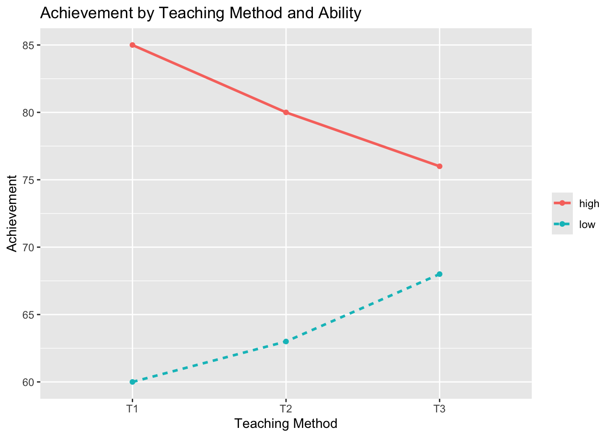
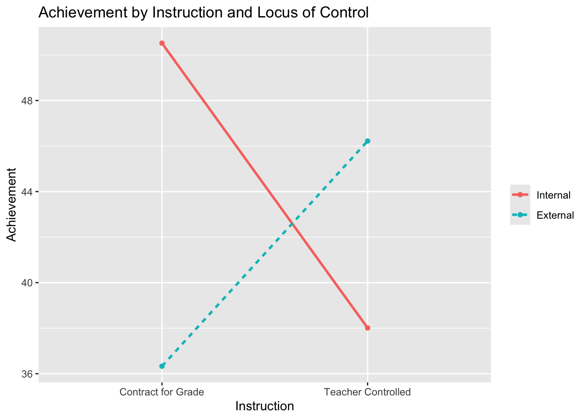

The following objects are masked from 'package:stats':
filter, lag
The following objects are masked from 'package:base':
intersect, setdiff, setequal, union
Loading required package: purrr
Loading required package: MASS
Attaching package: 'MASS'
The following object is masked from 'package:dplyr':
select
Attaching package: 'QuantPsyc'
The following object is masked from 'package:base':
norm
Attaching package: 'psych'
The following object is masked from 'package:boot':
logit
The following objects are masked from 'package:ggplot2':
%+%, alpha
Loading required package: carData
Attaching package: 'car'
The following object is masked from 'package:psych':
logit
The following object is masked from 'package:purrr':
some
The following object is masked from 'package:dplyr':
recode
The following object is masked from 'package:boot':
logit
Loading required package: lattice
Attaching package: 'lattice'
The following object is masked from 'package:boot':
melanoma
Attaching package: 'memisc'
The following object is masked from 'package:car':
recode
The following objects are masked from 'package:dplyr':
collect, recode, rename, syms
The following object is masked from 'package:ggplot2':
syms
The following objects are masked from 'package:stats':
contr.sum, contr.treatment, contrasts
The following object is masked from 'package:base':
as.array
Loading required package: mvtnorm
Loading required package: survival
Attaching package: 'survival'
The following object is masked from 'package:boot':
aml
Loading required package: TH.data
Attaching package: 'TH.data'
The following object is masked from 'package:MASS':
geyser
── Attaching core tidyverse packages ──────────────────────── tidyverse 2.0.0 ──
✔ forcats 1.0.1 ✔ stringr 1.6.0
✔ lubridate 1.9.5 ✔ tibble 3.3.1
✔ readr 2.2.0 ✔ tidyr 1.3.2
── Conflicts ────────────────────────────────────────── tidyverse_conflicts() ──
✖ psych::%+%() masks ggplot2::%+%()
✖ psych::alpha() masks ggplot2::alpha()
✖ lubridate::as.interval() masks memisc::as.interval()
✖ memisc::collect() masks dplyr::collect()
✖ dplyr::filter() masks stats::filter()
✖ lubridate::is.interval() masks memisc::is.interval()
✖ dplyr::lag() masks stats::lag()
✖ memisc::recode() masks car::recode(), dplyr::recode()
✖ memisc::rename() masks dplyr::rename()
✖ MASS::select() masks dplyr::select()
✖ car::some() masks purrr::some()
✖ memisc::syms() masks dplyr::syms(), ggplot2::syms()
✖ tibble::view() masks memisc::view()
ℹ Use the conflicted package (<http://conflicted.r-lib.org/>) to force all conflicts to become errors
Attaching package: 'kableExtra'
The following object is masked from 'package:dplyr':
group_rows
Attaching package: 'reshape2'
The following object is masked from 'package:tidyr':
smiths
7.1 Historical Background
Regression models and ANOVA developed in different research areas and address different questions
Regression models
Emerged in biology and psychology at the end of the 19th century as scientists studied the correlation of human’s attributes and characteristics.
For example: Sir Francis Galton described the “regression to the mean” phenomenon while studying the height of parents and their adult children (i.e., short parents’ children tended to be shorter than the average but they tended to be taller than their parents).
Aim: Explaining/predicting/forecasting data and determining the relative contribution of each independent variable to the prediction.
Regression models and ANOVA developed in different research areas and address different questions
Analysis of Variance (ANOVA)
Emerged in agricultural sciences in the early 20th century.
William S. Gosset (pseudonym: “Student”) proposed the t-test for the comparison of means of two (experimental) groups.
Sir Ronald A. Fisher proposed ANOVA to compare means from any number of experimental conditions without increase in Type I error.
Aim: Evaluate whether mean scores of a dependent variable significantly differ across (experimental) conditions. ANOVA is the ideal technique for many psychological areas.
7.2 The General Linear Model (GLM)
Many statistic textbooks in education and social sciences describe regression models and ANOVA as distinct and independent statistical concepts.
The General Linear Model (GLM) is the overarching method that includes regression and ANOVA.
The GLM conception is that observed data can be described in terms of a particular model and some error,
\(data = model + error\)
where the model term represents the hypothesis of interest; and the error term describes other (unconsidered) influences.
The relative size of model and error components can be used to judge how well the model describes the data.
General refers to the fact that GLM can be used to analyze continuous independent variables (as in regression analysis) and categorical independent variables (e.g., groups; as in ANOVA).
.red[Linear] means that linearity is assumed in terms of model parameters (not necessarily in terms of variables)
It answer the question: Are there significant differences between mean scores of a dependent variable across a number of groups (e.g., experimental conditions)?
True Experiment
An experiment that enables a researcher to test a hypothesized relationship between an independent variable and a dependent variable by manipulating the independent variable.
True experiments are characterized by:
manipulation by the researcher of one or more independent variables
use of controls such as the random assignment of participants to experimental conditions to
minimize the effects of nuisance variables
careful observation or measurement of one or more dependent variables
[1 and 2 are necessary for a true experiment]
Quasi-Experiment
A study in which at least one independent variable is manipulated, but participants are not randomly assigned to groups.
Some studies do not meet the requirements of a true experiment. Due to ethical reasons or other relevant reasons, a researcher cannot always conduct a true experiment.
Example: If you want to know the effect of attending half-day daycare vs. attending full-day daycare, it is probably unlikely to randomly assign participants (e.g., parents may need to work so half-day daycare is not an option).
Organismic Variable (also called Subject Variables)
They refer to already-existing characteristics of the subjects participating in the study (e.g., gender, age, intelligence, physical or psychiatric disorder, any personality attribute you can name).
When using organismic variables in a study, the researcher cannot manipulate them directly but must select participants for the different conditions by virtue of the characteristics they already have.
Other examples are Race/Ethnicity, ADHD, Introversion/Extroversion, Depression, SES
7.3.1 Statistical hypotheses
Null Hypothesis: \({H_0}:{\mu _1} = {\mu _2} = {\mu _3} = ... = {\mu _k}\) (The group means are equal in the population, where k is the number of groups)
Alternative Hypothesis: At least two of the \({\mu _j}\) (group means) are different in the population.
7.3.2 Basic idea of ANOVA
An F -statistic is used to determine whether significant differences in means exist.
In traditional ANOVA, F -statistic is the ratio of between group variance and within group variance.
The distribution of the F-statistics (with known degrees of freedom) is known, when the null hypothesis is correct.
The probability that the observed (or more extreme) differences are due to chance (i.e., sampling variation) can be determined by comparing the distribution of F-statistics under \({H_0}\) and the observed F-statistic.
If this probability is sufficiently small, then the null hypothesis is rejected.
Why not simply compare the group means two at a time using the t test for independent samples?
Besides the extra time that it takes, especially as the number of groups (k) increase, the reason we do no conduct several t tests is because of TYPE I ERROR INFLATION.
TYPE I ERROR INFLATION
When we set alpha ( \(\alpha\)) equal to .05, we are willing to risk being wrong 5% of the time when we reject the null hypothesis ( \({H_0}\)). With just two group means to compare, there is just 1 t statistic calculation. We would compare our observed/obtained t value with the critical t value to see if our observed/obtained t value fell in the critical region for rejecting the null ( \({H_0}\)). With alpha set at .05, the critical t value was originally determined by taking the sampling distribution of t for the appropriate df and locating the t value such that the proportion of the total number of t values that were equal to or more extreme than it equaled .05. That is, if we were randomly sampling one t score from the t distribution, the probability it would be greater than or equal to the critical t value is .05. Now what happens when we do an experiment involving many t comparisons, such as the 3 described above? We are no longer sampling 1 t value from the t distribution, but 3. The probability of getting t values greater than the critical t obviously goes up. It is no longer equal to .05. The probability of making a Type I error has gone up as a result of doing an experiment with many groups and analyzing the data with more than one comparison.
Overall Alpha for a set of tests is defined as the maximum risk one is willing to take in making at least one false rejection when the null is true (i.e., all the population means are equal in One-Way ANOVA), resulting in a Type I error.
Overall \(\alpha \approx r\alpha\) (It’s actually equal to \(1-{(1 - \alpha )^3}\)), where r is the number of tests being done.
With 3 tests, we have an approximate 15% chance of making at least 1 Type I error. The risk increases as the number of groups increase.
7.3.3 Empirical example
Reading achievement of 15 children for three experimental training conditions (A = control, B = non-parental training, and C = parental training).
Condition A
Condition B
Condition C
40.00
48.00
44.00
33.00
43.00
46.00
34.00
51.00
42.00
35.00
46.00
54.00
44.00
38.00
43.00
Mean
37.20
45.20
45.80
Grand Mean:
SD
4.66
4.97
4.82
42.73
Variance Partitioning (It’s all about the Variance). Traditinal ANOVA partitions the total variation of observed data into between-group and within-group components.
Total Sum of Squares: Equals the sum of squared deviations of individual data points around the overall mean (i.e., the grand mean) and serves as an indicator for the total variance of the dependent variable.
Between-group Sum of Squares: Equals the sum of squared deviations of the group means around the overall mean and serves as an indicator for the variance associated with group membership.
Within-group Sum of Squares: Equals the sum of squared deviations of individual data points around the group means and serves as an indicator for the unexplained variances existing within groups.
The total sum of squares equals the between-group sum of squares plus the within-group sum of squares, i.e., \(S{S_t} = S{S_b} + S{S_w}\)
Dividing these sums of squares by their respective degrees of freedom (df) makes these statistics more accurate estimates of the variability they represent in the population. The resulting value is referred to as the Mean Square or MS because it represents the mean of a particular sum of squares, which will be an unbiased estimate of the population variance.
Using \(M{S_b}\) and \(M{S_w}\), we can caluate the F ratio to test the null hypothesis that the group means are equal.
\(F = \frac{{M{S_b}}}{{M{S_w}}}\)
The coefficient of determination is defined as \({R^2} = \frac{{S{S_b}}}{{S{S_t}}}\)
Df Sum Sq Mean Sq F value Pr(>F)
group.f 2 230.5 115.3 4.968 0.0268 *
Residuals 12 278.4 23.2
---
Signif. codes: 0 '***' 0.001 '**' 0.01 '*' 0.05 '.' 0.1 ' ' 1
7.3.4 Pairwise comparisons
Note that a significant F-test simply means that there are significant differences somewhere among means. No statements are made concerning which means differ.
Planned or post-hoc comparisons are necessary to locate the source of a significant F-test.
Planned Comparisons are those comparisons that are planned in advance of data collection. For example, in an experiment with two treatment groups and one control group (see empirical example), one may only want to compare the treatment groups with the control group (without comparing the treatment groups).
Post-hoc comparisons are those comparisons withouth specific a priori theory (rather exploratory approach).
7.3.5 Planned comparisons
Each mean that reflects the planned hypothesis is weighted (i.e., numbers such as 0, 1, 1/2, etc).
At least two of the means have to have nonzero weights.
Groups with a weight of zero are left out of the comparison.
Means that are contrasted with each other are assigned weights with opposite signs.
The weights must sum to zero, i.e., \(\sum {{w_i} = 0}\)
Constrasts
Group A: Control
Group B: Non-parental Training
Group C: Parental Training
$\sum{w _i}$
control vs. average of training
1
-0.5
0
-0.5
non-parental vs. parental training
0
-1.0
0
1.0
contraol vs non-parental training
1
-1.0
0
0.0
control vs. parental training
1
0.0
0
-1.0
c1 <-c(1, -1/2, -1/2) # compares control vs. mean of both treatments groupsc2 <-c(0, -1, 1) # compares means of treatment groupscontrasts(reading$group.f) <-cbind(c1, c2) # add a "contrasts" attribute to "reading$group.f" mymodel2 <- model.c <-aov(reading ~ group.f, data=reading)summary(mymodel2, split =list(group.f =list("Control vs Treatment"=1, "Treatment1 vs Treatment2"=2)))
Df Sum Sq Mean Sq F value Pr(>F)
group.f 2 230.5 115.3 4.968 0.02679 *
group.f: Control vs Treatment 1 229.6 229.6 9.898 0.00844 **
group.f: Treatment1 vs Treatment2 1 0.9 0.9 0.039 0.84716
Residuals 12 278.4 23.2
---
Signif. codes: 0 '***' 0.001 '**' 0.01 '*' 0.05 '.' 0.1 ' ' 1
7.3.6 Post-hoc pairwise comparisons
For example, for three groups one obtains three pairwise comparisons: A vs. B, A vs. C, and B vs. C
The probability of not committing a Type I Error in three comparisons is \({(1 - \alpha )^3}\) with \(\alpha\) being the nominal significance level.
The probability that at least one of the three comparisons commits a Type I Error is \(1-{(1 - \alpha )^3}\). E.g., using \(\alpha = 0.05\), we get an actual \(\alpha\) of 0.143.
Thus, when more than two groups are compared, a correction for multiple comparisons must be used to avoid Type I Error inflation.
7.3.6.1 Bonferroni correction
Simplest method to adjust the nominal significance level.
Given a significance level of \(\alpha\), the p-value of each of k tests must be smaller than \(\alpha /k\).
For example, if k = 3 and \(\alpha = 0.05\): \(\alpha * = \frac{{0.05}}{3} = 0.017\)
Pairwise comparisons using t tests with pooled SD
data: reading$reading and reading$group.f
A B
B 0.066 -
C 0.046 1.000
P value adjustment method: bonferroni
One of the most commonly used multiple comparison procedures.
Performs all possible pairwise contrasts, where \({H_0}:{\mu _i} = {\mu _j}\) for all \(i \ne j\).
One of the most conservative procedures: Thus, low probability of Type I Error and less power.
mymodel3 <-aov(reading ~ group.f, data = reading)TukeyHSD(mymodel3)
Tukey multiple comparisons of means
95% family-wise confidence level
Fit: aov(formula = reading ~ group.f, data = reading)
$group.f
diff lwr upr p adj
B-A 8.0 -0.1271377 16.127138 0.0537998
C-A 8.6 0.4728623 16.727138 0.0380034
C-B 0.6 -7.5271377 8.727138 0.9788785
7.4 ANOVA Assumptions
Independence of observations: Observations are assumed to be randomly sampled from a pre-defined target population.
Each participant’s score on the dependent variable is not affected by other participants in the same treatment group
Normality: The dependent variable (or the residuals) are assumed to be normally distributed in each sub-population (i.e., in each experimental cell).
Visual displays of the data for each group (e.g., with histograms, QQ plots);
Descriptive statistics (e.g., skewness and kurtosis);
Use the Shapiro-Wilk test
Variance homogeneity: The variance is assumed to be the same for each sub-population.
The F test performs acceptably when this assumption is violated if groups are equal in size or if the number in the largest group/the number in the smallest group < 1.5. It becomes a problem when group sizes are extremely unequal (largest/smallest > 1.5) and the assumption is violated.
If larger variances are associated with small groups, the F test is liberal, meaning that the null is rejected falsely too often (i.e., greater than 5% of the time; actual \(\alpha\) > nominal \(\alpha\)).
If larger variances are associated with large groups, the F test is conservative, meaning that the null is rejected falsely much less than 5% of the time (actual \(\alpha\) < nominal \(\alpha\)). While this may not appear to be a problem, you tend to lose power with smaller alpha levels.
In R, use the bartlett.test function from the stats package or the leveneTest function from the car package to test the homogeneity assumption.
The null hypothesis for Levene’s test and the Bartlett’s test is that the variances in different groups are equal. You DO NOT want to reject the null hypothesis.
Bartlett’s test
bartlett.test(reading ~ group.f, data = reading)
Bartlett test of homogeneity of variances
data: reading by group.f
Bartlett's K-squared = 0.015081, df = 2, p-value = 0.9925
Levene’s test
leveneTest(reading ~ group.f, data = reading)
Levene's Test for Homogeneity of Variance (center = median)
Df F value Pr(>F)
group 2 0.0363 0.9645
12
What to do when the homogeneity of variance assumption is violated?
Run an ANOVA that does not assume equal variances, such as the Kruskal-Wallis test.
The Kruskal-Wallis test is a nonparametric test that is used with an independent groups design employing k samples. It is used as a substitute for the parametric one-way ANOVA when the assumptions of that test are seriously violated. The Kruskal-Wallis test does not assume normality, nor homogeneity of variance, as does the parametric ANOVA, and requires only ordinal scaling of the dependent variable (ranked data for the dependent variable). It is used when violations of normality and/or homogeneity of variance are extreme, or when interval or ratio scaling are not met by the data.
Use a more stringent alpha level (e.g., .01, .001)
Conduct a variance stabilizing transformation (e.g., square root or natural log) to the dependent variable
7.4.1 Robustness
Robustness refers to the insensitivity of a statistical procedure against violations of model assumptions.
Nominal alpha (level of significance) is the level set by the experimenter and is the percent of time one is rejecting falsely when the null hypothesis is true and all assumptions are met.
Actual alpha is the percent of time one is rejecting falsely if 1 or more of the assumptions is violated.
A test is robust if the actual alpha is very close to the nominal alpha.
Robustness refers to the insensitivity of a statistical procedure against violations of model assumptions.
Type I Error Robustness: A statistical procedure is said to be robust, if the procedure is able to protect the nominal significance level (e.g., \(\alpha = 0.05\)).
The ANOVA F -test is Type I Error robust against violations of the normality and variance homogeneity assumption (in particular, in balanced designs, i.e., equal sample sizes across conditions).
However, Wilcox (1995) cautions that skewed distributions or distributions with high kurtosis lower the power of the ANOVA F -test to detect true mean differences.
Wilcox (2012) suggests modern statistical techniques (e.g., bootstrapping) and Conover and Iman (1981) suggest rank transformations as potential remedies.
7.5 One-way ANOVA Using GLM approach
The model underlying the (traditional) ANOVA can be written as: \({y_i} = \mu + {\tau _j} + {\varepsilon _{i}}\)
where \(\mu\) is a constant representing the DV free of any group effects, \(\tau _j\) is the effect of the jth group, and \({\varepsilon _i}\) is the individual error
The ANOVA model can also be written as a multiple regression model: \({y_i} = \alpha + \sum\limits_j^{k - 1} {{\beta _j}{x_{ij}} + } {\varepsilon _i}\)
where \(\alpha\) is a constant representing the DV free of any group effects; \(\beta_j\)’s are regression coefficients for the coded variables \(x_{ij}\); and {_i} is the individual error.
We have used the GLM approached before when we had regression models with categorical predictors.
With k groups, we only need (k-1) coded variables.
Dummy coding and effect coding are often used coding schemes.
Choose a reference group for coding
ANOVA is a special case of multiple linear regression!
Dummy Coding
In R, dummy coding is called “treatment contrasts” (this is the default). the first group is used as the reference group by default.
reading <-import("data/reading.txt")reading$group.f <-as.factor(reading$group)levels(reading$group.f) <-c("A", "B", "C")contrasts(reading$group.f) # group A is the reference group## B C## A 0 0## B 1 0## C 0 1mymodel4 <-lm(reading ~ group.f, data=reading) #<<summary(mymodel4)$coefficients## Estimate Std. Error t value Pr(>|t|)## (Intercept) 37.2 2.154066 17.269666 7.682923e-10## group.fB 8.0 3.046309 2.626129 2.213323e-02## group.fC 8.6 3.046309 2.823088 1.537161e-02
$y$
$\beta _0$
$x_B$
$x_C$
40
1
0
0
33
1
0
0
34
1
0
0
35
1
0
0
44
1
0
0
48
1
1
0
43
1
1
0
51
1
1
0
46
1
1
0
38
1
1
0
44
1
0
1
46
1
0
1
42
1
0
1
54
1
0
1
43
1
0
1
The reference group can be changed.
contrasts(reading$group.f) <-contr.treatment(n =3, base =2) #<<contrasts(reading$group.f) # 2nd group is the reference group
Effect Coding In R, effect coding is called “sum contrasts” (i.e., contrasts sum up to zero)
# library(memisc) # use the modified version of the contr.sum() function from the "memisc" groupcontrasts(reading$group.f) <-contr.sum(n =3, base =1) # 1st group is the reference groupcontrasts(reading$group.f)## 2 3## A -1 -1## B 1 0## C 0 1mymodel6 <-lm(reading ~ group.f, data=reading) summary(mymodel6)$coefficients## Estimate Std. Error t value Pr(>|t|)## (Intercept) 42.733333 1.243651 34.361207 2.350226e-13## group.f2 2.466667 1.758787 1.402481 1.861089e-01## group.f3 3.066667 1.758787 1.743626 1.067619e-01coef(mymodel6)## (Intercept) group.f2 group.f3 ## 42.733333 2.466667 3.066667
$y$
$\beta _0$
$x_B$
$x_C$
40
1
-1
-1
33
1
-1
-1
34
1
-1
-1
35
1
-1
-1
44
1
-1
-1
48
1
1
0
43
1
1
0
51
1
1
0
46
1
1
0
38
1
1
0
44
1
0
1
46
1
0
1
42
1
0
1
54
1
0
1
43
1
0
1
contrasts(reading$group.f) <-contr.sum(n =3, base =2) # 2nd group is the reference groupcontrasts(reading$group.f)
Use the function anova() to get the traditional ANOVA table.
anova(mymodel4)
Analysis of Variance Table
Response: reading
Df Sum Sq Mean Sq F value Pr(>F)
group.f 2 230.53 115.27 4.9684 0.02679 *
Residuals 12 278.40 23.20
---
Signif. codes: 0 '***' 0.001 '**' 0.01 '*' 0.05 '.' 0.1 ' ' 1
Note that the coding scheme does not affect the ANOVA statistics.
anova(mymodel5); anova(mymodel6); anova(mymodel7)
7.6 Factorial Analysis of Variance (Factorial ANOVA)
Factorial ANOVA is used when you have two or more categorical independent variables.
For exmaple:
Is the treatment effect (3 treatments) different for females than for males?
[2 (gender) x 3 (treatment) factorial design]
Is teaching method (4 methods) more effective for high- than for low-ability students?
[2 (ability level) x 4 (teaching method) factorial design]
Is the gender difference on some variable (e.g., math achievement) greater for certain nationalities (American vs. Indonesian) than for others?
[2 (gender) x 2 (nationality) factorial design
You can use this design without treatment variables. For example, your design could consist of demographic variables only (age by gender; age by ethnicity).
Factorial Design is a good thing (for 3 reasons).
A two-way ANOVA allows us to examine the joint or interactive effect of the two independent variables on the dependent variable.
Factorial designs can lead to more powerful tests by reducing error (within cell) variance. If performance on the dependent variable is related to the individual difference characteristic (the blocking variable; e.g., gender, ethnicity, age), then the reduction can be substantial.
Economy of participants. We only need half the participants for a two-way ANOVA as would be needed for two one-way ANOVAs with the same number of levels for each factor.
A two-way ANOVA allows us to examine the joint or interactive effect of the two independent variables on the dependent variable.
Interaction Definitions
An interaction is present when the effects of one independent variable on performance change at different levels of the second independent variable.
An interaction is present when the pattern of differences associated with an independent variable changes at different levels of the other independent variable.
An interaction is present when the simple effects of one independent variable are not the same at all levels of the second independent variable.
An interaction is present when the main effect of one independent variable is not representative of the simple effects of that variable.
An interaction is present when the differences between the cell means representing the effect of factor A at one level of factor B do not equal the corresponding differences at another level of factor B.
An interaction is present when the effects of one of the independent variables depend on the levels of the other independent variable.
An interaction is present when one of the effects of one independent variable is not constant (not the same) at all levels of the other independent variable.
Example 1: The degree of superiority changes, but one subgroup always does better than another.
T1 T2 T3 mean
High Ability 85.00000 80.00000 76.00000 80.33333
Low Ability 60.00000 63.00000 68.00000 63.66667
mean 72.50000 71.50000 72.00000 72.00000
Warning: Using `size` aesthetic for lines was deprecated in ggplot2 3.4.0.
ℹ Please use `linewidth` instead.

Example 2: The superiority reverses; one treatment is best with one group, but another treatment is better for a different group.
Contract for Grade Teacher Controlled mean
Internal 50.520 38.010 44.265
External 36.330 46.220 41.275
mean 43.425 42.115 42.770

Factorial designs can lead to more powerful tests by reducing error (within cell) variance. If performance on the dependent variable is related to the individual difference characteristic (the blocking variable; e.g., gender, ethnicity, age), then the reduction can be substantial.
Treatment Only (variances are inside parentheses)
T1
T2
18, 19, 21, 20, 22, 11, 12, 11, 13, 14 (18.77)
17, 16, 16, 18, 15, 9, 9, 11, 8, 7 (17.6)
Treatment X Gender (variances are inside parentheses)
$T_1$
$T_2$
Males
18, 19, 21, 20, 22 (2.5)
17, 16, 16, 18, 15 (1.3)
Females
11, 12, 11, 13, 14 (1.7)
9, 9, 11, 8, 7 (2.2)
Economy of participants. We only need half the participants for a two-way ANOVA as would be needed for two one-way ANOVAs with the same number of levels for each factor.
Drug X
Drug Y
DrugZ
$n = 30$
$n = 30$
$n=30$
Biofeedback
$n=45$
Control
$n = 45$
DrugX
Drug Y
Drug Z
Total
Biofeedback
$n=15$
$n=15$
$n=15$
$n=45$
Control
$n=15$
$n=15$
$n=15$
$n=45$
Total
$n=30$
$n=30$
$n=30$
7.6.1 Numerical calcuations for two-way ANOVA
We had between and within variation in the one-way design. In the two-way design, we will have four sources of variation:
Variation due to Factor A (1 independent variable)
Variation due to Factor B (1 independent variable)
Variation due to the interactive effect of A and B (interaction between two independent variables)
Within cell (error) variance
Earlier Example: Reading achievement of 15 children for three experimental training conditions (A = control, B = non-parental training, C = parental training)
Let’s call the treatment Factor A.
We also want to consider the Gender Factor (Factor B).
The mean of each cell and the marginal means look like:
Factor A
Control
Non-parental training
Parental training
Boys
$\mu _{11}$
$\mu _{12}$
$\mu _{13}$
$\mu _{1.}$
Girls
$\mu _{21}$
$\mu _{22}$
$\mu _{23}$
$\mu _{2.}$
$\mu _{.1}$
$\mu _{.2}$
$\mu _{.3}$
$\mu _{..}$
Two-Way ANOVA allows two factors to be included in the same model (J X K groups). A 3 X 2 ANOVA means there are three levels of Factor A and two levels of Factor B.
In a two-way ANOVA, there are two main effects (the effect of one factor that is averaged across the levels of all other factors) and an interaction effect:
Main Effect for A: \({{H}_{0}}:{{\mu }_{.1}}={{\mu }_{.2}}=\cdots ={{\mu }_{.J}}\) (population column means are equal, where J = number of levels for Factor A). Is there a significant difference between training groups, holding gender constant?
Main Effect for B: \({{H}_{0}}:{{\mu }_{1.}}={{\mu }_{2.}}=\cdots ={{\mu }_{K.}}\) (population row means are equal, where K = number of levels for Factor B). Is there a significant gender difference, holding training conditions constant?
Interaction Effect (Factor A X Factor B): ): \({{H}_{0}}:{{\varphi }_{ij}}=0\) for each i and j, where \({{\varphi }_{ij}}\) represents the cell interaction effect (the part of the cell mean that cannot be accounted for by the overall effect/grand mean and by main effects A and B). Are the differences between boys and girls different across different training conditions? Alternatively, are training effects different for boys and girls?
7.6.2 Partitioning the total sum of squares
\[{y_{ijk}} = \mu + {\alpha _j} + {\beta _k} + {(\alpha \beta )_{jk}} + {\varepsilon _{ijk}}\] where - \(\mu = {\Sigma _j}{\Sigma _k}{\mu _{jk}}/JK\) is the grand mean
\({\alpha _j} = {\mu _{.j}} - \mu\) is the effect of the jth group of Factor A. The marginal mean \(mu _{.j}\) is defined as \({\mu _{.j}} = {\Sigma _k}{\mu _{jk}}/K\) where K is the number of levels of Factor B.
\({\beta _k} = {\mu _{k.}} - \mu\) is the effect of the kth gorup of Factor B. The marignal mean \(mu _{k.}\) is defined as \({\mu _{k.}} = {\Sigma _j}{\mu _{jk}}/J\) where J is the number of levels of Factor A.
\({(\alpha \beta )_{jk}} = {\mu _{jk}} - (\mu + {\alpha _j} + {\beta _k})\) is the interaction effect, where \(\mu _{jk}\) is the cell mean. An interaction effect is teh extent to which each cell mean differs from the additive pattern of the main effects.
\({\varepsilon _{ijk}}\) is the error term which is assumed to be normally distributed (i.e., \({\varepsilon _{ijk}} \sim N(0,\sigma _\varepsilon ^2)\))
When interpreting results of models with interaction terms, use Type III Sums of Squares.
model <-aov(reading ~ training * gender, data = dat)summary(model)# anova(model)Anova(model, type ="III")
Df Sum Sq Mean Sq F value Pr(>F)
training 2 361.1 180.54 4.118 0.0337 *
gender 1 15.0 15.04 0.343 0.5653
training:gender 2 53.6 26.79 0.611 0.5537
Residuals 18 789.2 43.85
---
Signif. codes: 0 '***' 0.001 '**' 0.01 '*' 0.05 '.' 0.1 ' ' 1
Anova Table (Type III tests)
Response: reading
Sum Sq Df F value Pr(>F)
(Intercept) 5700.3 1 130.0025 1.144e-09 ***
training 120.2 2 1.3703 0.2793
gender 2.0 1 0.0456 0.8333
training:gender 53.6 2 0.6110 0.5537
Residuals 789.2 18
---
Signif. codes: 0 '***' 0.001 '**' 0.01 '*' 0.05 '.' 0.1 ' ' 1
Main effect of training: F(2,18) = 1.37, p = 0.28. We fail to reject the null hypothesis that there are no differences among the training groups.That is, there are no statistically significant differences among the training groups in reading.
Main effect of gender: F(1, 18) = 0.05, p = .83. We fail to reject the null hypothesis that boys and girls have the same reading scores. That is, there is no statistically significant gender difference in reading.
Interaction effect: F(2, 18) = 0.61, p = 0.55. We fail to reject the null hypothesis that there is no interaction between training and gender. That is, there is no statistically significant interaction between training and gender.
7.6.4 Assumptions for factorial ANOVA (see Section 7.4)
Use leveneTest to test variance homogeneity.
Levene’s test
leveneTest(reading ~ training * gender, data = dat)
Levene's Test for Homogeneity of Variance (center = median)
Df F value Pr(>F)
group 5 8.554 0.000272 ***
18
---
Signif. codes: 0 '***' 0.001 '**' 0.01 '*' 0.05 '.' 0.1 ' ' 1
What to do when the homogeneity of variance assumption is violated?
Run an ANOVA that does not assume equal variances, such as the Kruskal-Wallis test.
The Kruskal-Wallis test is a nonparametric test that is used with an independent groups design employing k samples. It is used as a substitute for the parametric one-way ANOVA when the assumptions of that test are seriously violated. The Kruskal-Wallis test does not assume normality, nor homogeneity of variance, as does the parametric ANOVA, and requires only ordinal scaling of the dependent variable (ranked data for the dependent variable). It is used when violations of normality and/or homogeneity of variance are extreme, or when interval or ratio scaling are not met by the data.
Use a more stringent alpha level (e.g., .01, .001)
Conduct a variance stabilizing transformation (e.g., square root or natural log) to the dependent variable
7.6.5 Contrasts using the multcomp package
One-Way ANOVA using pairwise contrasts (so-called Tukey contrasts)
#library(multcomp)model <-aov(reading ~-1+ training, data = dat) # no intercept to obtain cell meanscoef(model)
General Linear Hypotheses
Multiple Comparisons of Means: Tukey Contrasts
Linear Hypotheses:
Estimate
B - A == 0 9.500
C - A == 0 4.625
C - B == 0 -4.875
confint(out)
Simultaneous Confidence Intervals
Multiple Comparisons of Means: Tukey Contrasts
Fit: aov(formula = reading ~ -1 + training, data = dat)
Quantile = 2.5206
95% family-wise confidence level
Linear Hypotheses:
Estimate lwr upr
B - A == 0 9.5000 1.4447 17.5553
C - A == 0 4.6250 -3.4303 12.6803
C - B == 0 -4.8750 -12.9303 3.1803
One-Way ANOVA using user-defined contrasts.
K <-rbind(c(1,-1/2, -1/2), # control vs. mean of the two treatment groupsc(0, -1, 1)) # compares the two treatment groupsrownames(K) <-c("control vs treatments", "treatment 1 vs treatment 2")colnames(K) <-names(coef(model))# Kout <-glht(model, linfct = K)out
General Linear Hypotheses
Linear Hypotheses:
Estimate
control vs treatments == 0 -7.063
treatment 1 vs treatment 2 == 0 -4.875
summary(out)
Simultaneous Tests for General Linear Hypotheses
Fit: aov(formula = reading ~ -1 + training, data = dat)
Linear Hypotheses:
Estimate Std. Error t value Pr(>|t|)
control vs treatments == 0 -7.063 2.768 -2.552 0.0364 *
treatment 1 vs treatment 2 == 0 -4.875 3.196 -1.525 0.2601
---
Signif. codes: 0 '***' 0.001 '**' 0.01 '*' 0.05 '.' 0.1 ' ' 1
(Adjusted p values reported -- single-step method)
Two-Way ANOVA (main effects only)
model2 <-aov(reading ~ gender + training, data = dat)
Male
Condition B
Condition C
B - A
0
1
0
C - A
0
0
1
C - B
0
-1
1
male - female
1
0
0
model2 <- aov(reading ~ gender + training, data = dat)
First, extract the appropriate contrast matrices for both factors.